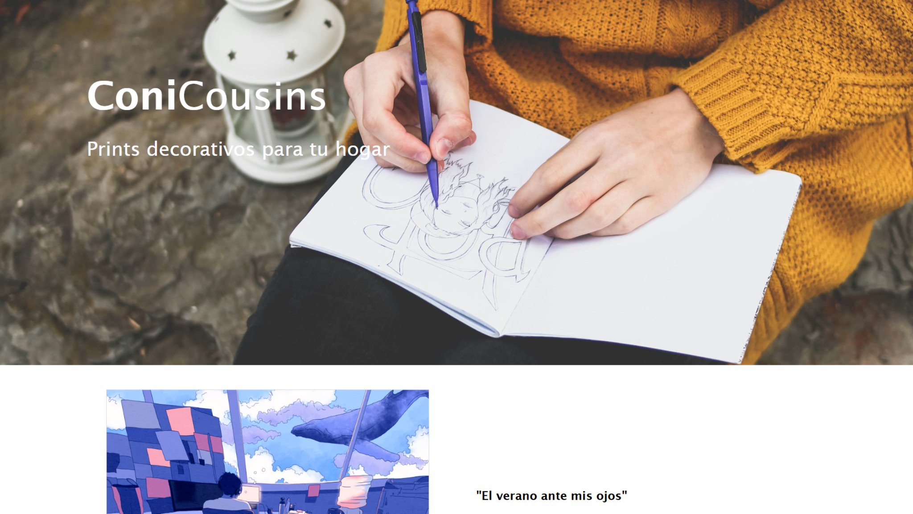
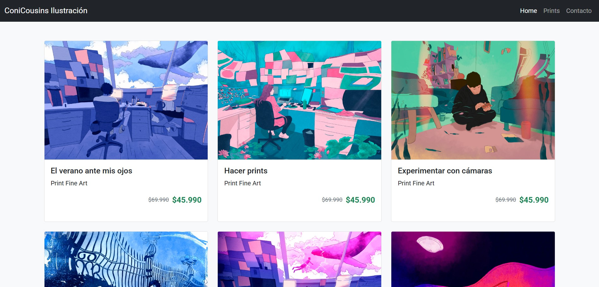
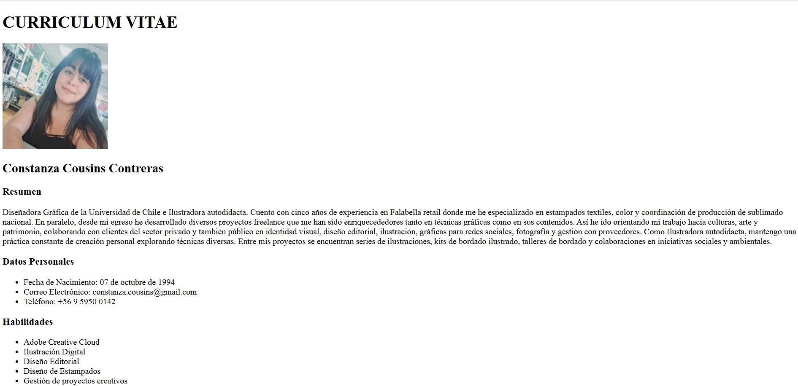

Diseñadora gráfica enfocada en estampados textiles, ilustración y proyectos culturales.
Diseñadora gráfica titulada de la Universidad de Chile, con formación complementaria en distintas áreas del diseño. Cuento con más de 5 años de experiencia en el desarrollo de estampados textiles, combinando una mirada estratégica con una sensibilidad artística. Ilustro desde siempre, explorando lo gráfico como una forma de expresión personal
Diseño estampados pensados para moda, mezclando tendencias, color y composición. Me interesa que cada diseño funcione tanto a nivel visual como en un contexto real de uso.
La ilustración es algo que me acompaña desde siempre. Trabajo con un estilo expresivo y limpio, que puedo adaptar a distintos proyectos, desde lo editorial hasta lo más experimental.
Me interesa trabajar en proyectos culturales donde el diseño tenga un rol más profundo, como en exposiciones, libros o contenido educativo, conectando lo visual con el contenido.
Mi formación combina una base sólida en diseño gráfico con especialización en distintas áreas que han ido ampliando mi enfoque. A lo largo del tiempo he integrado lo visual, lo editorial y lo digital, desarrollando una mirada que cruza lo creativo con lo técnico. Actualmente me encuentro profundizando en desarrollo web, incorporando herramientas que me permiten expandir mis proyectos hacia lo digital.
Universidad de Chile, 2020. Formación profesional enfocada en comunicación visual, desarrollo de proyectos gráficos y pensamiento crítico.
Diplomado Diseño Editorial UAH, 2024. Formación en desarrollo de publicaciones, sistemas editoriales y trabajo con contenido visual complejo.
Formación en desarrollo web, aprendiendo HTML, CSS, JavaScript y herramientas modernas para crear proyectos digitales.
Mi experiencia combina diseño para retail, proyectos freelance y trabajo cultural, integrando lo visual con objetivos concretos.
2021 – actualidad
Desarrollo de estampados textiles, trabajo con color y tendencias, además de coordinación de producción de sublimado a nivel nacional.
2019 – actualidad
Desarrollo proyectos de identidad visual, diseño editorial e ilustración, trabajando con clientes independientes y proyectos culturales.
2025
Diseño editorial, gráficas de sala y material didáctico para proyecto sobre Ana Cortés Jullian en colaboración con equipo curatorial.
Una selección de proyectos desarrollados durante mi formación en desarrollo web, aplicando HTML, CSS, Bootstrap y diseño responsive.

Primera landing desarrollada con HTML, CSS y Bootstrap. Trabajé estructura, jerarquía visual y adaptación a distintos dispositivos.
Ver proyecto
Desarrollo de interfaz utilizando Bootstrap, trabajando grillas, componentes y diseño responsive.
Ver proyecto
Primer proyecto web donde trabajé la estructura base en HTML, entendiendo jerarquía, etiquetas y organización del contenido.
Ver proyecto